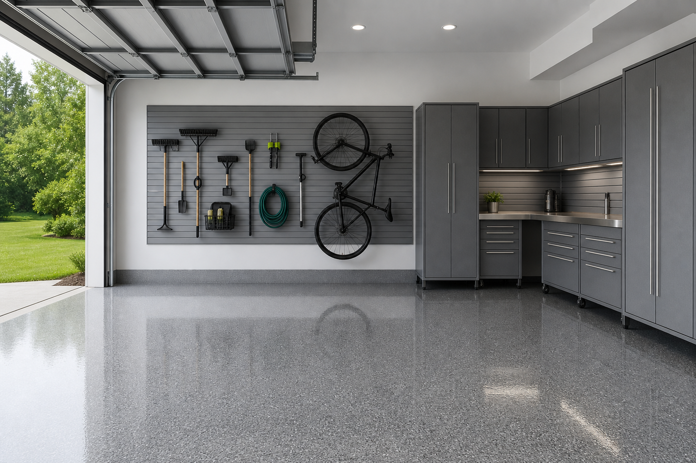

Garage Storage Ideas That Pair With a Floor Coating Upgrade
A new garage floor coating makes the biggest visual impact when the room is organized enough to actually see the floor. The best garage storage ideas lift clutter off the slab, reduce tire hazards, and make cleaning faster—especially in busy households. Book garage floor coating services first, then install heavy storage so you do not chip fresh coating.
Zone first: parking, workshop, storage
Before buying organizers, decide what the garage must do every week. A workshop-heavy garage needs different clearances than a storage-first garage.
Slatwall and vertical storage (why it works)
Vertical systems can keep yard tools, bikes, and handheld tools accessible without consuming floor area—exactly what you want after investing in a coated floor.
Cabinets vs open shelving
Open shelving is convenient, but cabinets reduce visible clutter and dust accumulation. Many “showroom garages” combine both: cabinets for small items, slatwall for bulky gear.
Bike storage that protects floors and walls
Wall-mounted bike hooks free space, but placement matters for handlebar clearance and wall strength. If you are unsure, ask a pro to anchor into structure correctly.
Workbench layout for real projects
Put your workbench where you have light, power, and room to step back. Keep the floor path to the bench clear so sawdust and debris are easy to sweep.
FAQ
Should you install storage before or after a floor coating?
Often after, because coating work needs a clear slab and equipment access—confirm timing with your floor coating contractor.
Is slatwall strong enough for bikes and tools?
It can be, when installed with correct fasteners and rated hooks—follow manufacturer load guidance.